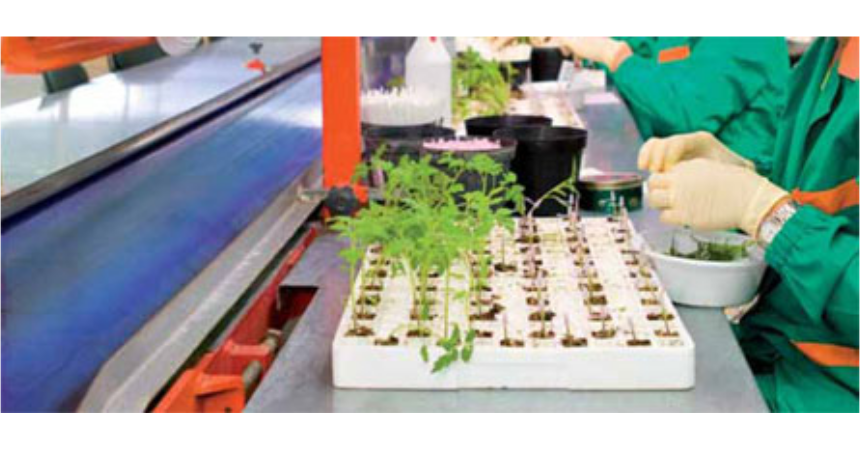

Grafting or budding watermelons should be done for two basic reasons:
1. Fusarium wilt diseases, especially due to frequent production on the same surface, because the soil is usually infected with the causative agent of this dangerous disease.
2. The second reason is obtaining a stronger root system that better tolerates lower soil temperatures and drought, and better uses water and nutrients. Significantly higher watermelon yields, larger fruits, and earlier ripening are achieved.
For successful grafting – budding, it is important to choose the best rootstock. For watermelons, bottle gourd (Lagenaria vulgaris) is most commonly used as a rootstock, and for melons, the rootstock is muskmelon (Cucurbita Moshata).
The grafting process for watermelons and melons is the same.
Commercial seed companies usually recommend hybrid rootstocks from the firms they represent. However, it is best to follow the experience from many years of practice of a large number of users who achieve the best results with bottle gourd rootstock.
Experience from many years of practice of the largest producers of grafted – budded seedlings in Europe and with us points to the choice of clips with which the greatest acceptance is achieved.
Results have confirmed that the greatest acceptance is achieved with the following types of clips. We offer you such clips to choose from between plastic, biodegradable for single use, and silicone for multiple use.
You decide which is the better solution for you.
| Image | Name | Size | Dimension | Sales Packaging |
|---|---|---|---|---|
| WM-10 | 2,5 mm | 27x20x12 mm | 9.000 | |
| WM-10 | 2,5 mm | 27x20x12 mm | 1.000 | |
| WM-10 | 2,5 mm | 27x20x12 mm | 500 | |
| WM-10 | 2,5 mm | 27x20x12 mm | 100 | |
| WM-11 | 2,0 mm | 27x20x12 mm | 9.000 | |
| WM-11 | 2,0 mm | 27x20x12 mm | 1.000 | |
| WM-11 | 2,0 mm | 27x20x12 mm | 500 | |
| WM-11 | 2,0 mm | 27x20x12 mm | 100 |
| Image | Name | Size | Dimension | Sales Packaging |
|---|---|---|---|---|
| MOLSIL | 2,5 mm | 6x12x12 mm | 20.000 | |
| MOLSIL | 2,5 mm | 6x12x12 mm | 1.000 | |
| MOLSIL | 2,5 mm | 6x12x12 mm | 500 | |
| MOLSIL | 2,5 mm | 6x12x12 mm | 100 | |
| MOLSIL | 2,1 mm | 6x11x12 mm | 20.000 | |
| MOLSIL | 2,1 mm | 6x11x12 mm | 1.000 | |
| MOLSIL | 2,1 mm | 6x11x12 mm | 500 | |
| MOLSIL | 2,1 mm | 6x11x12 mm | 100 |
Copyright Nibon Pak All Rights Reserved. Development & SEO Web Vortex